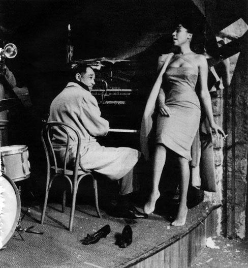
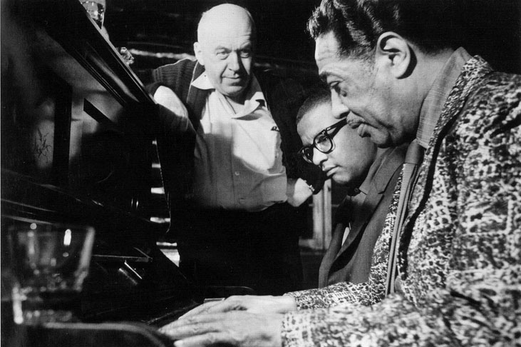
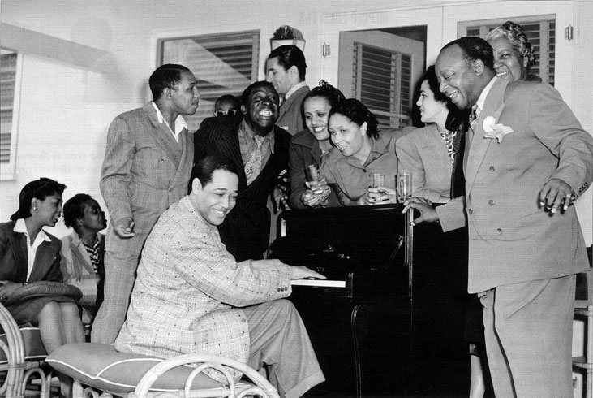
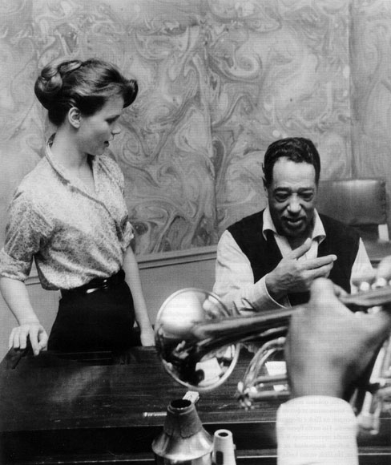
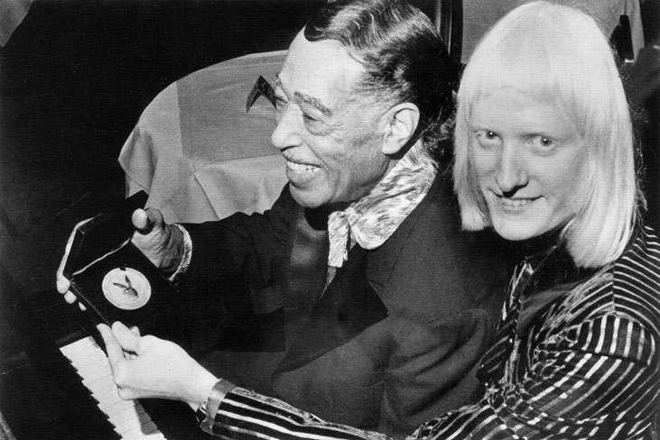
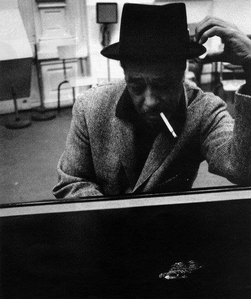

Дюк Елингтън
Дюк Елингтън
Рекс Стюарт, който прекарва цяло десетилетие с оркестъра на Дюк Елингтън, си спомня следната сцена: „Видях как Дюк късаше на малки парченца една музикална пиеса, за която беше изгубил доста време да я напише. Попитах го защо прави това, а той отвърна: Ако тя е хубава, винаги ще мога да си я спомня, но ако е лоша, искам да забравя за нея и никой да не види колко лошо съм я написал..." Дюк е изумителен артист, новатор и консерватор едновременно. Неговият живот от 1899 до 1974 практически обхваща цялата история на джаза. Той често подчертава, че има три образования - улицата, училището и Библията. като последната е най-важна в живота му. Дюк е сложна натура. На въпроса, каква е неговата музикална философия, той шокира с отговора си: „Обичам много сълзи. Затова харесвам свиренето на фрази от Траурен марш на Шопен. Тогава по лицата на хората винаги виждам сълзи." С подобни издевателски изказвания Дюк поставя на мястото всеки, който реши да се промъкне в душата му. Той често се уединява. И притежава множество таланти - на композитор, художник, писател, театрален продуцент. Освен това обича да си похапва. Трики Нентън, музикант от неговия оркестър, казва: „Може и да е гений, но о, Боже, колко яде!" Елингтън обожава месо, печен лук, салата от омари, плодове, кафе, шоколадови пирожки, сладолед. Носят се легенди, че понякога изяжда по 32 кренвирша наведнъж. Дюк рядко изпада в ярост. Той е фанатик на тема здраве. Носи безчислено количество медикаменти в себе си и при нужда ги дава на музикантите от оркестъра.

Дюк Елингтън, Даян Керъл, Париж 1960
Неговият живот и музиката му напълно опровергават митовете за джазмените. Музикантите му повече напомнят на свещеници във времето, когато всички се разрушават от наркотици и алкохол. Дюк се възхищава на красотата. Особено е мил с жените. Например, докато пътува в самолета, казва на стюардесата: „Вашият договор вероятно включва и това да сте толкова красива!" Дюк е галантен мъж. Всичко започва от детството. Дюк обожава своите родители и сестра си Рут. Баща му Джеймс работи в Белия дом като доставчик и във военноморските сили. Научава Дюк на красиви маниери и любов към високопарните думи. Елингтън е привързан доста и кьм майка си, която умее да свири на пиано, споменава я дори на приема в Белия дом през 1969, даден по повод неговата 70-годишнина от Никсън. От нея Дюк получава силната си религиозна вяра. Саксофонистът Ото Хардуик, един от най-добрите му приятели, разказва как Дюк понякога се връща късно у дома, влиза във ваната и чете Библията, докато водата сьвсем не изстине. Много от музиката, която пише, Дюк ще посвети на Бога. „Искам с музиката си да донеса послание от Бога" - казва Дюк. Елингтън е смесица от наивност и изисканост. На 2 юли 1918 Дюк се жени за Една Томпсън, която живее на сьщата улица в дом срещу неговия и двамата заедно са ходили на училище толкова години. На 21 години Дюк вече има син Мерсер, който цял живот ще се бори да излезе от сянката на прочутия си баща. Когато по-късно става музикант, Мерсер получава следните съвети: „Напиши на плаката Елингтън с големи букви, а отдолу Мерсер с малки!"

Дюк Елингтън, 1970
Бракът на Дюк не се оказва щастлив. Той никога не се развежда с Една, но практически те живеят разделени. Тя ползва прекрасните му вашингтонски жилища, както и постоянна материална издръжка. През 1959 едно списание публикува материал за Елингтън със снимка на Една. Дюк е бесен. Той отдавна живее с Беатрис, която навсякъде се нарича мисис Елингтън. А нейният дом в Ню Йорк на Сен Николас Авеню става негово постоянно жилище до края на живота му. Дюк не желае да си спомня за Една. В началото на своята младост Дюк съчинява песни за бродуейските музикални издатели по 15 долара на парче с всички авторски права. Неговите приятели напускат Вашингтон, за да отидат в меката на големите пари Ню Йорк. Малко по-късно типично в негов стил Дюк пътува в първа класа и шикарно такси, пристига на 129-а улица и открива своите другари музиканти с празни джобове. Работа няма. Всички заедно започват да обикалят клубовете и накрая все пак се установяват в един нощен клуб. За Дюк този живот е като приказка. Така се оформя бендът на Елингтън. Той има особено обаяние върху приятелите си. Момчетата работят от 11 вечерта до 8 сутринта. Тогава, в самото начало, Дюк все още е с Една. Те оставят сина си Мерсер във Вашингтон и живеят в една малка стая в Ню Иорк. В онзи момент Една е една от showgirls на Дюк и трябва да се разхожда по сцената, за да сьздава атмосфера. „Тогава бях млада и много ревнива, не исках да деля Дюк с публиката. Не можех да чакам публиката да му се насити и чак тогава да остане време за мен. Винаги когато исках да му кажа нещо, трябваше да чакам. Това доведе до окончателен разрив между нас" - разказва Една. Тя се връща във Вашингтон. А Елингтън постепенно се прочува. На 4 декембри 1927 Дюк започва да свири в най-известния клуб в Ню Йорк - Cotton Club. Явява се на прослушване със своите момчета и собственикът на клуба харесва изпълнението им. Мафиотите от клуба дори отменят вече поети ангажименти и контракти на Дюк с други работодатели с фразата: Бъдете великодушни или ще бъдете мъртви! Така оркестърът на Дюк Елингтън остава

Джон Данкуорт, Клио Лейн, Дюк Елингтън и Марион Райън
само на тяхно разположение. Животът в Cotton Club е бляскав. Огромна заплата за музикантите, прочута публика от важни хора. Всяка вечер музиката на клубния бенд на Елингтън се излъчва по радиото. Когато клубът затваря в 4 сутринта, другите заведения наоколо са отворени и музикантите продължават своите джемсешъни. „Типичният музикант не може да легне да спи просто така" - казба барабанистът Сони Грир. Времената обаче освен интересни са и опасни. Елингтън споделя, че полицията често го разпитва Виждал ли е в клуба този или онзи човек, знае ли някакви имена и пр. Дюк вижда и знае много неща, но ако иска да остане жив, не бива да говори. Понякога някой току-що излязъл от затвора гангстер му поръчва любимото си парче, което Дюк трябва да изпълнява в продължение на час, но какво може да направи. Изобщо да оцелееш в средата на нюйоркските и чикагските гангстери не е лесно. Чувството за единство в бенда на Елингтън е удивително, той е изключителен ръководител и в него няма нищо диктаторско. „В началото ние дори не мислехме за пари, Всеки даваше свои предложения, беше като семеен бенд" - казва тромпетистът Кути Уилямс. В музиката Дюк е новатор, понякога предписва на друг инструмент партия, която е най-естествена за кларинета, например. „Нашето свирене беше напористо, стихийно и необуздано. Искахме да се усети негърският дух" - казва Дюк. Нито един мениджър не е правил повече за един музикант, отколкото Ървинг Милс за Дюк. Милс настоява звукозаписните компании да включат черния Дюк Елингтън в изключително бели каталози. Ървинг е пародия на своята професия - нисък и набит, дебел, с дебела пура в устата, оживено жестикулиращ, ужасно общителен.

Дюк Елингтън, 1970
Неговата енергия отстранява всички пречки по пътя на Елингтън. Милс дори е посочен за автор на текста в много от ранните композиции на Дюк. Отношенията им обаче се променят, когато през 1935 Милс отказва да даде на Дюк аванс от 5 хиляди долара за погребението на майка му. В живота на Елингтън се сменят много жени. В продължение на няколко години Дюк има връзка с Милдред Диксън, някои дори я смятат за негова жена. Танцьорката Милдред обаче е заменена с танцьорката Беатрис, известна по-късно като Еви Елингтън. Междувременно той има и други жени. Притежава репутацията на изискан кавалер. Елингтън се страхува да пътува с кораб и когато през 1933 му се налага да посети Европа, по цели нощи не спи. Причината е, че е чел историята за Титаник. Но именно в Лондон Дюк за първи път усеща вкуса на славата. Поначало Дюк държи музикантите му да изглеждат добре. И да са дисциплинирани. „Не обичам пияниците, които трябва да измъквам от завивките преди концерт" - често казва Дюк. Веднъж един полицай от Юга му казва: „Щеше да си велик музикант, ако беше бял." Тогава Дюк отвръща: „Да, всичко щеше да е различно и ако бях бял и велик, сега нямаше да разговарям с теб!" По отношение на расизма Дюк казва, че Европа е съвсем друг свят. Той е впечатлен, че може да отиде навсякъде без проблем и да говори с когото пожелае. През 1939 пет хиляди ученици в Швеция правят серенада под прозорците на Елингтън по случай 40-годишнината му по време на негово турне. Иронията е, че много афроамериканци от Америка не ценят музиката на Дюк, защото я определят за много „бяла". Беатрис е най-тайнствената част от живота на Дюк. Наполовина негърка, наполовина испанка. Тя е изящна и грациозна. Елингтън се влюбва в нея безумно. 40-те години са най-щастливият период на Дюк с Беатрис, докато не започват дългите му концертни отсъствия. Гастролният живот е неизбежна реалност за Дюк. Но той остава фин. „Да напиша музика трябва да знам всичко за човека, който ще я изпълнява. Важно е дори това как играе покер" - казва най-големият джаз композитор Дюк Елингтън.

Дюк Елингтън и музикантът Едгар Уинтър в ресторант Rainbow Grill презентират своите награди. Ню Йорк, 1973
Има остър усет за своята и чуждата индивидуалност. Дюк си купува специални скъпи ризи, за да поддържа репутацията си на денди. Импресариото Норман Гранц казва: „Дюк беше невероятен егоист във френския смисъл на тази дума. Ненавиждаше всичко, което е в разрез с неговия начин на живот." 1955-а е пълен провал в музикалния живот на Дюк. Но година по-късно на фестивала в Нюпорт бендът му има бляскав триумф. Публиката крещи: Още, още, а организаторите се ужасяват, че тълпата ще стане неуправляема. Момчетата на Дюк са извикани 4 пъти на бис. Списание Time слага портрета на Дюк Елингтън на корица и разказва за неговия успех. На въпроса, коя от неговите работи му доставя най-голямо удовлетворение, Дюк казва: „композицията A Drum Is a Woman." През 1958 Дюк отново посещава Англия. Получава писмо от кралицата: „Съжалявам, че не съм била на нито един ваш концерт, но моят съпруг, принц Филип, беше във възторг от вашата музика." Дюк е на върха на славата си. Той обожава Европа и обича да прекарва много време в Париж. Намира французите за една от най-толерантните нации спрямо хората с различен цвят на кожата. В Лас Вегас Дюк се запознава с 40-годишната Фернанда де Кастро Монте. Висока, надменна, красива блондинка, изискана лейди, която Елингтън винаги представя като графиня. Тя е космополит, който обикаля света, знае пет езика и пее. Дюк започва все по-старателно да се облича, да пие водка, която тя смята за благородна напитка, и да яде хайвер, тъй като според Фернанда хайверът е полезен за мъжете. „Фернанда направи много за Дюк - Казва сестра му Рут. - Тя беше интелектуалка." Фернанда често пътуба с Дюк, докато Беатрис обитава сама дома им в Ню Йорк, в който има специална стая за всички награди и подаръци на Дюк. Но Елингтън е твърде внимателен с изоставената си любима - праща й красиви писма, всеки ден се обажда по телефона, изпраща й цветя, плодове и сладки неща. Дългите отсъствия на Дюк тласкат Беатрис кьм депресии, Фернанда е главната жена в живота на Дюк през 60-те.

Дюк Елингтън в Barclays Recording Studio. Париж, 1960
Техните отношения са бурни. Дюк обвинява Фернанда, че иска да живее бохемски, докато той обикаля света и пише композиции за филми и постановки. Бендът на Дюк е сборище от своенравни гении. По това време синът му Мерсер става организатор в бенда, тоест цял живот поддрьжник. на славата на баща си. Но Дюк често казва, че не желае синът му да се занимава с музика, а да стане например инженер-електротехник. През 60-те придобиват особена публичност и расовите проблеми, на мода е Мартин Лутър Кинг. Веднъж на пресконференция в Делхи на въпрос за дискриминацията Дюк разказва следната история: „Неотдавна срещнах Мартин Лутър Кинг в Чикаго, движеше се по Мичиган Авеню. Махнах му с рька и той помоли шофьора си да спре този дълъг кадилак. Помощник му отвори вратата, а два полицая с мотоциклети спряха пред и зад автомобила. По този начин живее човекът, който представлява угнетената раса. Така че жизнените стандарти са различи..." Явно Дюк е използван от американските служби за съзнателно пропагандиране на американския начин на живот. По онова време, през 1963, Мерседес, внучката на Дюк Елингтън, става първата чернокожа танцьорка в модерен балет по националната телевизия. През 70-те Дюк вече боледува от рак. Не губи сили и завършва своя трети Концерт за свещена музика. „Можете да заблудите глупака със светска музика, но не можете да сте неискрени с Бога!" - казва Дюк. След като Елингтън напуска този свят, президентът Ричард Никсън заявява: „Заради ума, вкуса, интелекта и елегантността, които Дюк придаде на своята музик, той е изключителен композитор." „Елингтън е единственият гений, който познавам" - довършва образа му небезизвестният Орсън Уелс...